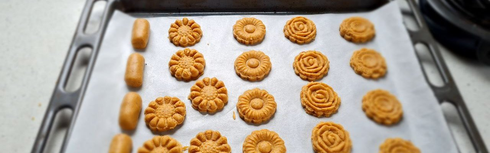
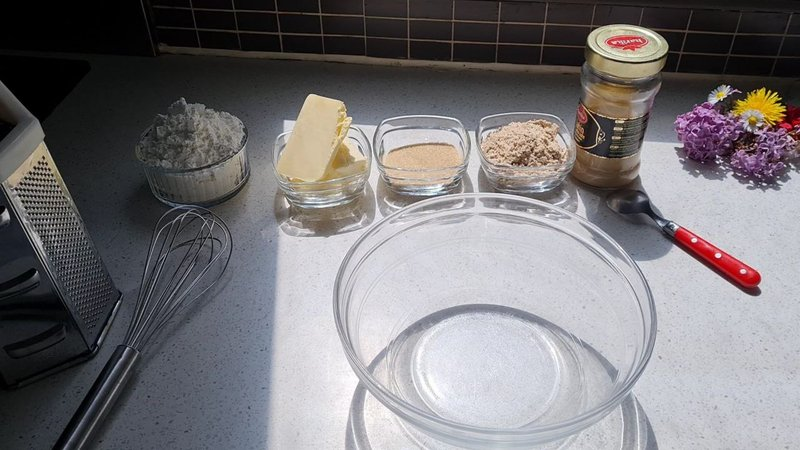
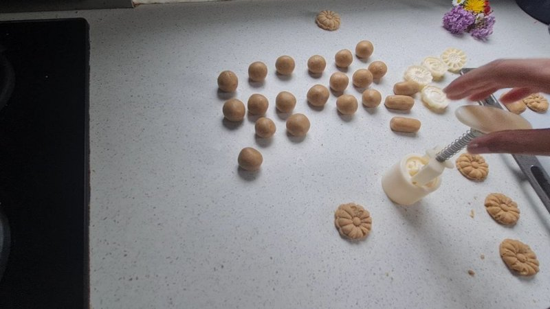
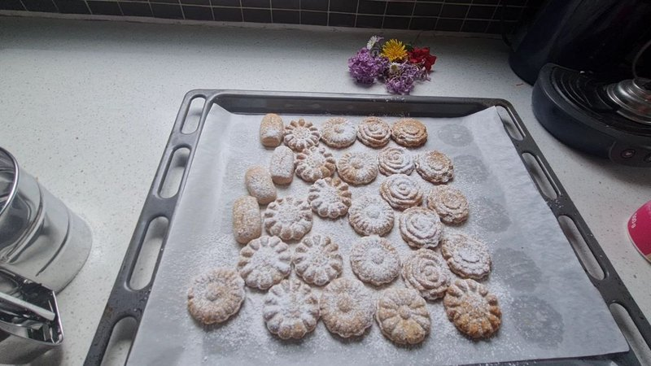
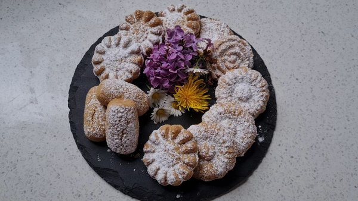

Spring Cookie Recipe
As an Amazon Associate, I earn from qualifying purchases.
For the delicious spring biscuit first you need the following ingredients.
Ingredients
- 170g Flour
- 100 g butter (at room temperature)
- 50 g brown sugar
- 60 g ground walnuts or almonds
- 80 g sesame paste
- Icing sugar

Preparation
First, we mix the butter, brown sugar, salt and sesame paste with a whisk.
Then add the finely ground walnut and flour, then we knead the dough to a smooth mass.
Shape the dough into a round shape and wrap it with cling film. Then chill it in the fridge for
15 - 20 minutes.
Take the dough ball out of the fridge and place it on a lightly floured work surface.

We form small balls and we start cutting them out (these are our cookies).
Don't have a cookie cutter press? Buy one :
https://amzn.to/3o5kSuu
Preheat the oven to 180 degrees and line a baking tray with parchment paper.
Place the cookies on the baking tray and bake for 15 minutes at 180ºC.

After baking, let cool on a baking rack and dust with powdered sugar.

Guten Appetit! -